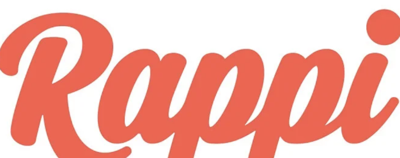
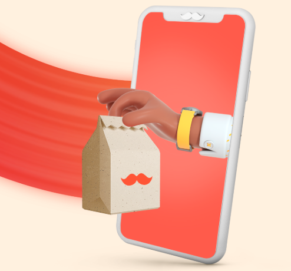
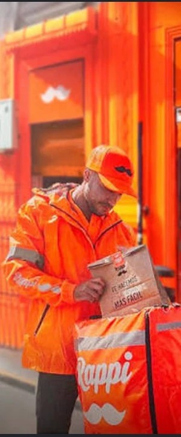

Simón Borrero · Rappi · Mini presentación de la entrevistaUna app de domicilios que se volvió super app en América Latina: mercado, restaurantes, servicios financieros y más.
No arrancó de cero: venía de fundar Grability, software de mercado en línea vendido a El Corte Inglés y Reliance. Llegó con experiencia y credibilidad.
La app era buena, pero el mercado tardaba hasta 24 horas en llegar. La falla no era la pantalla: era la logística.

Hablaron del rumbo de la sociedad y la política. Lo llama «un líder espectacular»; la entrevista no detalla una lección de negocio puntual.

Lo mejor de mi vida salió de saltar al vacío.PARÁFRASIS · MIN 1:20:08 – 1:26:55
Que su gente llegue a su mejor versión resolviendo problemas. Ganar es secundario.
Cuando Rappi casi quiebra, siguió por no fallarle al equipo que confió en él.
Prueba la idea en vez de debatirla semanas. Hasta el más joven puede cambiar la estrategia.
Quedarse ahí te quita la prueba de lo que eres capaz de hacer.